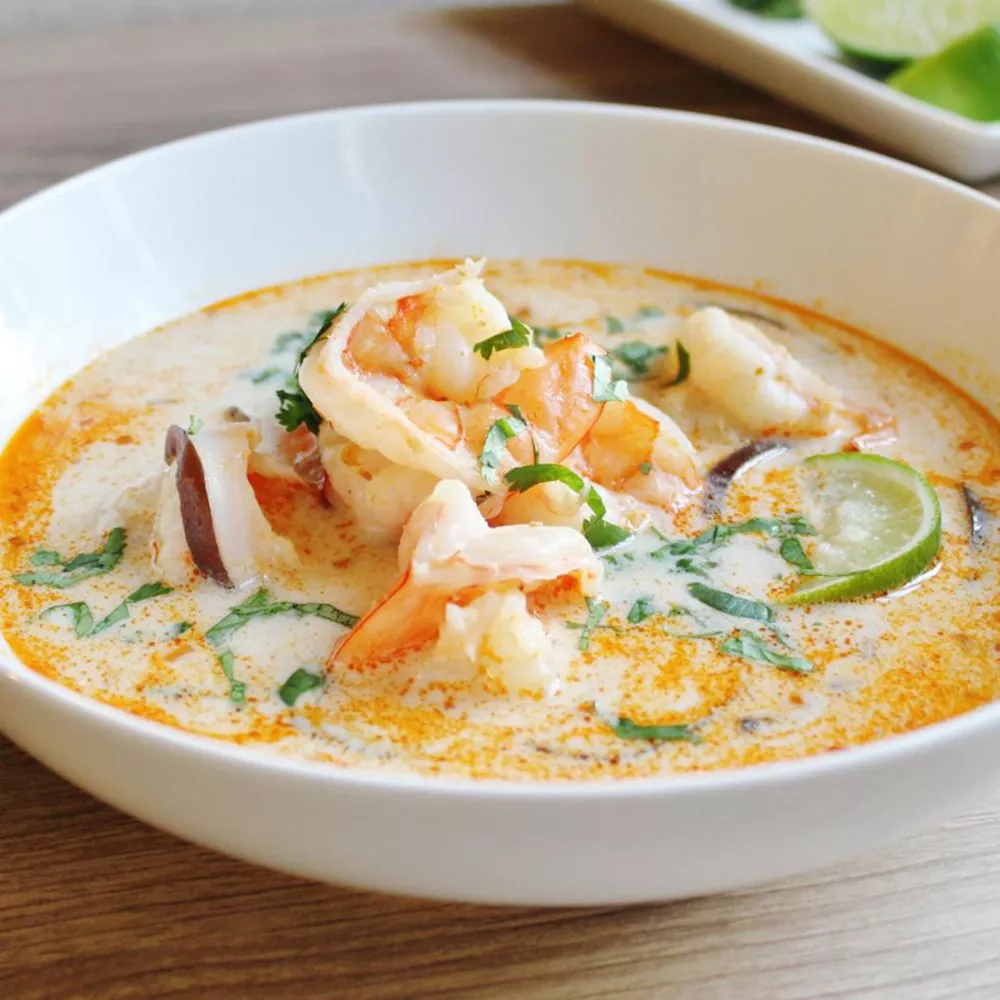

Coconut Soup

An image of the finished dish under the h1 heading that you added earlier. You can find images of the dish on Google or the recipe site we linked to earlier.
Under the image, it should have an appropriately sized “Description” heading followed by a paragraph or two describing the recipe.
Under the description, add an “Ingredients” heading followed by an unordered list of the ingredients needed for the recipe.
Finally, under the ingredients list, add a “Steps” heading followed by an ordered list of the steps needed for making the dish.